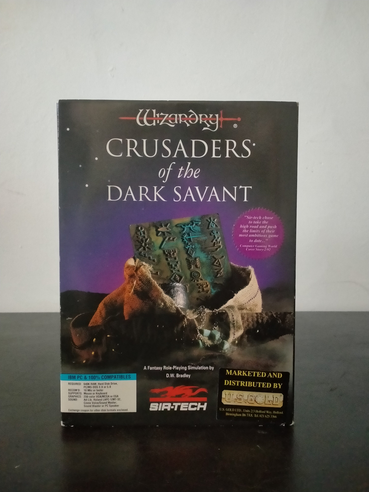

Ficha #000082
Wizardry: Crusaders of the Dark Savant
Wizardry: Crusaders of the Dark Savant, también conocido como Wizardry VII, es un CRPG de 1992 diseñado por D.W. Bradley y publicado por Sir-Tech. Continuación directa de Bane of the Cosmic Forge, permite importar personajes de la entrega anterior o crear un nuevo grupo para explorar un mundo extraño donde la fantasía clásica se mezcla con elementos de ciencia ficción. El juego mantiene la estructura de rol en primera persona, exploración de mazmorras, combate por turnos, creación compleja de personajes y una gran densidad narrativa, incorporando además campañas exteriores, automapeado, interfaz mediante ratón, sonido digital y soporte gráfico VGA/MCGA/EGA. Esta edición Big Box para IBM PC compatibles, comercializada y distribuida por U.S. Gold en el Reino Unido, conserva especial interés documental por sus disquetes, mapa, guía Playmaster y materiales de soporte asociados a uno de los grandes dungeon crawlers occidentales de comienzos de los noventa.
- Formato
- Big Box
- Plataforma
- MsDos
- Género
- Rol CRPG Dungeon crawler Fantasía Ciencia ficción
- Serie
- Todos Big Box
- Desarrollador
- Sir-Tech Software, Inc.
- Distribuidor
- Sir-Tech Software, Inc., U.S. Gold Ltd
- EAN
- 0054349221031
Contenido de la edición
- Caja Big Box
- Disquetes de 3,5 pulgadas
- Wizardry: Crusaders of the Dark Savant Playmaster's Guide
- Mapa
- Notas adicionales de información
- Tarjeta de soporte al cliente
- Cupón de intercambio de discos
- Sobre de respuesta comercial
Preservación
- Protección
- Manual lookup
- Formato recomendado
- Otro
- Jugable en virtualización
- Sí
Edición en disquetes de 3,5 pulgadas. Para preservación se recomienda realizar imagen individual de cada disquete y conservar la guía Playmaster y documentación impresa, relevantes para instalación, consulta y posible verificación manual. La ejecución virtual es viable en DOSBox u otros entornos MS-DOS configurando disco duro, memoria convencional y soporte de sonido compatible.